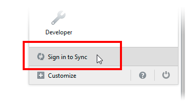
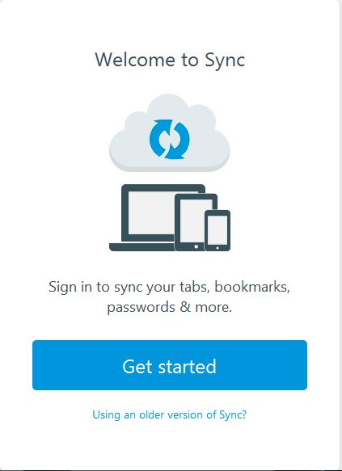

Firefox Sync
With the help of Firefox Sync, You can access your bookmarks, history, passwords and more from any device.
You only need to do this part once. Launch Firefox on your favorite device and choose the appropriate directions below.
Sign up for Firefox Sync
-
Click the menu button and then click Sign in to Sync. The Firefox Sync page will open in a new tab.

The Firefox Sync tab will look like this.

- Click the Get Started button.
- Fill out the form to create an account and click Next. You're almost there!
- Check your email for the verification link and click on it to confirm your email address. You're ready to go!